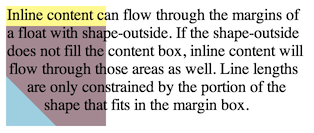

Abstract
CSS Shapes describe geometric shapes for use in CSS.
For Level 1, CSS Shapes can be applied to floats.
A circle shape on a float will cause inline content
to wrap around the circle shape
instead of the float's bounding box.
Future levels of CSS Shapes will allow use of shapes
on elements other than floats.
Other CSS modules can make use of shapes as well,
such as CSS Masking [[CSS-MASKING]]
and CSS Exclusions [[CSS3-EXCLUSIONS]].
Status of this document
A previous version of this draft has been published as part of the
Working Draft “CSS Exclusions and Shapes” dated 3 May 2012.
Table of contents
Introduction
This section is not normative.
Shapes define arbitrary geometries
that can be used as CSS values.
This specification defines properties
to control the geometry
of an element's float area.
The 'shape-outside' property uses shape values
to define the float area for a float.
If a user agent implements both CSS Shapes
and CSS Exclusions,
the 'shape-outside' property defines
the exclusion area for an exclusion.
A future level of CSS Shapes will define a shape-inside property,
which will define a shape to wrap content within the element.
Module Interactions
This module extends the float features defined in [[!CSS21]] chapter 9.
Values
This specification follows the CSS property definition conventions from [[!CSS21]]. Value types not defined in these specifications are defined in CSS Values and Units Module Level 3 [[!CSS3VAL]].
In addition to the property-specific values listed in their definitions, all properties defined in this specification also accept the inherit keyword as their property value. For readability it has not been repeated explicitly.
Terminology
Wrap
This specification uses the term 'wrap'
to refer to flowing content
around the sides of a float area,
defined in [[!CSS21]] chapter 9.
Content wraps around the right side
of a left-floated box,
and content wraps around the left side
of a right-floated box.
One result of this wrapping
is that line boxes next to a float
are shortened as necessary
to avoid intersections with the float area.
Float area
The area used
for wrapping content
around a float element.
The rules for float behavior
use the sides of the float area
to determine where content flows.
By default,
the float area is the float element's
margin box.
This specification's 'shape-outside' property
can be used to define arbitrary,
non-rectangular float areas.
Relation to the box model and float behavior
While the boundaries used
for wrapping inline flow content
outside a float
can be defined using shapes,
the actual box model does not change.
If the element has specified
margins, borders or padding
they will be computed and rendered
according to the [[!CSS3BOX]] module.
Also, float positioning and stacking are not affected
by defining a float area with a shape.
When a shape is used to define
a float area,
the shape is clipped
to the float's margin box.
In other words,
a shape can only ever reduce
a float area,
not increase it.
A reduced float area may have no effect
on some line boxes
that would normally be affected by the float.
A float area defined by a shape
may reduce the normal float area on all sides,
but this does not allow content to wrap
on both sides of a float.
Left floats with a 'shape-outside' still
only allow content wrapping on the right side,
and right floats only allow wrapping on the left.
In the following example
the left and right floating
div elements
specify a triangular shape
using the 'shape-outside' property.
<div style="text-align:center;">
<div id="float-left"></div>
<div id="float-right"></div>
<div>
Sometimes a web page's text content appears to be
funneling your attention towards a spot on the page
to drive you to follow a particular link. Sometimes
you don't notice.
</div>
</div>
<style type="text/css">
#float-left {
shape-outside: polygon(0 0, 100% 100%, 0 100%);
float: left;
width: 40%;
height: 12ex;
}
#float-right {
shape-outside: polygon(100% 0, 100% 100%, 0 100%);
float: right;
width: 40%;
height: 12ex;
}
</style>
</div>

Since shapes are clipped to the float's margin box,
adding this shape to the left float above
would result in the same rendering.
shape-outside: polygon(0 0, 500% 500%, 0 500%);
A shape with no extent will create
a float area with no extent.
Because wrapping only considers the float area,
the shape below applied to a left float
will allow inline content
to flow through all of the float's box.
shape-outside: rectangle(0,0,0%,0%);
A 'shape-outside' can create open areas
on both the left and right
of a float area.
Content still wraps only on one side
of a float in this case.
In the picture,
the shape is rendered in blue,
and the content area outside the shape in mauve.
shape-outside: polygon(50px 0px, 100px 100px, 0px 100px);

The following styling creates
a shape much smaller than
the float's content area,
and adds a margin-top to the float.
In the picture,
the shape is rendered in blue,
the content area outside the shape in mauve,
and the margin area of the float box in yellow.
The inline content only wraps around the shape,
and otherwise overlays the rest
of the float margin box.
.float-left {
shape-outside: polygon(0% 50%, 50% 100%, 0 100%);
float: left;
width: 100px;
height: 100px;
margin-top: 20px;
}

The next picture shows a possible result
if two of these floats
were stacked next to each other.
Note that the floats are positioned
using their margin boxes,
not the float area.
Basic Shapes
Shapes can be specified using
types and parameters drawn from SVG's basic shapes.
The definitions use the
<length> and
<percentage>
types.
When using this syntax
to define shapes,
the relevant box is determined
by the computed value of the
'box-sizing'
property.
The coordinate system for the shape
has its origin on the top-left corner of the
relevant box with the x-axis
running to the right
and the y-axis running downwards.
All the lengths expressed in percentages
are resolved from the used dimensions
of the relevant box.
For the radius r of the circle shape,
a percentage value is resolved from the used width and height of the relevant box as sqrt((width)**2 + (height)**2))/sqrt(2).
Supported Shapes
The following basic shapes are supported. All basic shapes use functional notation following the rules defined in CSS Values and Units [[CSS3VAL]].
- rectangle()
takes four to six arguments
of <length> or <percentage>
-
-
The first four arguments represent
x, y, width and
height
of the rectangle.
Negative values for width and height are invalid.
-
The last two optional arguments represent
rx and ry.
For rounded rectangles they define
the x-axis radius and y-axis radius
of the ellipse used to round off
the corners of the rectangle.
Negative values for rx and ry are invalid.
See notes below on edge cases for these arguments.
- inset-rectangle()
takes four to six arguments
of <length> or <percentage>
-
-
The first four arguments represent the
top, right, bottom and
left offsets
from the relevant box inward
that define the positions
of the edges
of the inset rectangle.
Negative values for any
of these insets are invalid.
-
The last two optional arguments represent
rx and ry.
For rounded inset rectangles they define
the x-axis radius and y-axis radius
of the ellipse used to round off
the corners of the inset rectangle.
Negative values for rx and ry are invalid.
See notes below on edge cases for these arguments.
- circle()
takes three arguments
of <length> or <percentage>
-
-
The three arguments represent
cx,
cy,
and r.
They define the x-axis and y-axis coordinates
of the center of the circle
and the radius of the circle.
A negative value for r is invalid.
- ellipse()
takes four arguments
of <length> or <percentage>
-
-
The four arguments represent
cx,
cy,
rx, and
ry.
They define the x-axis and y-axis coordinates
of the center of the ellipse
and the x-axis and y-axis radius
of the ellipse.
Negative values for rx and ry are invalid.
- polygon()
starts with an optional <fill-rule> argument,
followed by a list of arguments consisting of
<length> or <percentage> pairs.
-
- fill-rule - The filling rule used to determine the interior of the
polygon. See fill-rule property in SVG for details. Possible values are nonzero
or evenodd. Default value when omitted is nonzero.
-
Each pair argument in the list represents xi and yi -
the x and y axis coordinates of the i-th vertex of the polygon.
The UA must close a polygon
by connecting the last vertex
with the first vertex of the list.
At least three vertices are required
to define a polygon with an area.
This means that (for this specification)
polygons with less than three vertices
(or with three or more vertices
arranged to enclose no area)
result in an empty float area,
which allows inline content
to flow through all
of the float's box.
If either or both of the values for corner radii
on rectangle or inset-rectangle are omitted, then their values
are determined in the following manner.
If neither rx nor ry are specified,
the values are 0 for both.
If only one value is specified,
that value is used for both.
If the values for corner radii cause any
of the curves to overlap,
the solution for
overlapping curves
from CSS Backgrounds and Borders [[!CSS3BG]]
is used to avoid the overlap.
Syntax of Basic Shapes
rectangle() =
rectangle( <shape-arg>, <shape-arg>, <shape-arg>, <shape-arg> [, <shape-arg>]? [, <shape-arg>]? )
inset-rectangle() =
inset-rectangle( <shape-arg>, <shape-arg>, <shape-arg>, <shape-arg> [, <shape-arg>]? [, <shape-arg>]? )
circle() = circle( <shape-arg>, <shape-arg>, <shape-arg> )
ellipse() = ellipse( <shape-arg>, <shape-arg>, <shape-arg>, <shape-arg> )
polygon() = polygon( [<fill-rule>,]? [<shape-arg>]{2}# )
<shape-arg> = <length> | <percentage>
<fill-rule> = nonzero | evenodd
Interpolation of Basic Shapes
For interpolating between
one basic shape and a second,
the rules described below are applied.
- If both basic shapes are of the same type and not of type polygon:
- Interpolate between each value.
- If one basic shape is of type rectangle and the second of type circle or ellipse:
- Replace the circle/ellipse with a temporary rectangle of equal dimension.
- Set the values for rx and ry on the temporary rectangle to ‘50%’.
- Interpolate between the two rectangles as above.
- If one basic shape is an inset-rectangle and the second is of type rectangle, circle or ellipse:
- Replace the inset-rectangle with a temporary rectangle of equal dimension.
- Interpolate between the basic shapes as above.
- If both basic shapes are of type polygon and if both polygons have the same number of vertices:
- Interpolate between each value.
- In all other cases:
- No interpolation is specified.
Shapes from Image
Another way of defining shapes
is by specifying a source image
whose alpha channel is used
to compute the shape.
The shape is computed to be the path
that encloses the area
where the opacity of the specified image
is greater than the 'shape-image-threshold' value.
If the 'shape-image-threshold' is not specified,
the initial value to be considered is 0.0.
Sizing the shape from an image follows the Concrete Object Size Resolution section from [[!CSS3-IMAGES]].
For animated raster image formats
(such as GIF),
the first frame of the animation sequence is used.
An image is floating to the left of a paragraph. The image shows the 3D version of the
CSS logo over a transparent background. The logo has a shadow using an alpha-channel.
The image defines its float area through the 'shape-outside' property.
<p>
<img id="CSSlogo" src="CSS-logo1s.png"/>
blah blah blah blah...
</p>
<style>
#CSSlogo {
float: left;
shape-outside: attr(src url);
shape-image-threshold: 0.1;
}
</style>
The 'shape-outside' property re-uses the url from the src attribute of the img element.
It is perfectly possible to display an image and use a different image for its
float area.
In the figure below, the alpha-channel threshold is represented by the dotted line around
the CSS logo.
It's then possible to affect where the lines of the paragraph start in three ways:
- Modifying the alpha channel in the image
- Changing the value of the 'shape-image-threshold' property
- Changing the value of the 'shape-margin' property (see example 8)
Declaring Shapes
Shapes are declared with
the 'shape-outside' property,
with possible modifications
from the 'shape-margin' property.
The shape defined by
the 'shape-outside'
and 'shape-margin' properties
changes the geometry
of a float element's
float area.
The 'shape-outside' Property
| Name: |
shape-outside |
| Value: |
auto | <basic-shape> | <image> |
| Initial: |
auto |
| Applies to: |
floats |
| Inherited: |
no |
| Percentages: |
N/A |
| Media: |
visual |
| Computed value: |
computed lengths for <basic-shape>, the image with its URI made absolute, otherwise as specified |
The values of this property have the following meanings:
- auto
- The float area uses the margin box as normal.
- <basic-shape>
-
The shape is computed based on the values of one of 'rectangle', 'inset-rectangle', 'circle', 'ellipse'
or 'polygon'.
- <image>
-
The shape is extracted
and computed based
on the alpha channel
of the specified <image> as defined by 'shape-image-threshold'.
User agents must use the
potentially CORS-enabled fetch
method defined by the [[!HTML5]] specification
for all URLs in a 'shape-outside' value.
When fetching,
user agents must use "Anonymous" mode,
set the referrer source
to the stylesheet's URL
and set the origin to the URL
of the containing document.
If this results in network errors
such that there is no valid fallback image,
the effect is as if
the value 'auto'
had been specified.
The 'shape-image-threshold' Property
The 'shape-image-threshold'
defines the alpha channel threshold
used to extract the shape
using an image.
A value of 0.5 means that
the shape will enclose
all the pixels
that are more than 50% opaque.
| Name: |
shape-image-threshold |
| Value: |
<number> |
| Initial: |
0.0 |
| Applies to: |
floats |
| Inherited: |
no |
| Percentages: |
alpha channel of the image specified by 'shape-outside' |
| Media: |
visual |
| Computed value: |
The same as the specified value after clipping the <number> to the range [0.0,1.0]. |
The values of this property have the following meanings:
- <number>
-
Sets the threshold used
for extracting a shape
from an image.
The shape is defined
by the pixels whose alpha value
is greater than the threshold.
Any values outside the range
0.0 (fully transparent)
to 1.0 (fully opaque)
will be clamped to this range.
A future level of CSS Shapes may define
a switch to use the luminance data
from an image instead of the alpha data.
When this happens,
shape-image-threshold will be extended
to apply its threshold
to either alpha or luminance,
depending on the switch state.
The 'shape-margin' property
The 'shape-margin' property adds a margin to a 'shape-outside'.
This defines a new shape
that is the smallest contour
(in the shrink-wrap sense)
that includes all the points
that are the 'shape-margin' distance outward
in the perpendicular direction
from a point on the underlying shape.
Note that at points where
a perpendicular is not defined
(e.g. sharp points)
take all points
on the circle centered at the point
and with a radius of 'shape-margin'.
This property takes only non-negative values.
| Name: |
shape-margin |
| Value: |
<length> |
| Initial: |
0 |
| Applies to: |
floats |
| Inherited: |
no |
| Percentages: |
N/A |
| Media: |
visual |
| Computed value: |
the absolute length |
A 'shape-margin' creating an offset from a polygonal 'shape-outside'. The lighter blue area shows the shape in a 100x100px float, and the darker blue area shows the 10px offset.
.float {
shape-outside: polygon(10px 10px, 90px 50px, 40px 50px, 90px 90px, 10px 90px);
shape-margin: 10px;
}

If shape-margin is added to the CSS logo from example 6, the line boxes wrapping around the shape are shortened further.
#CSSlogo {
shape-margin: 35px;
}
Acknowledgments
This specification is made possible by input from
Andrei Bucur,
Alexandru Chiculita,
Elika Etemad,
Arron Eicholz,
Daniel Glazman,
Arno Gourdol,
Zoltan Horvath,
Chris Jones,
Bem Jones-Bey,
Marcus Mielke,
Alex Mogilevsky,
Hans Muller,
Mihnea Ovidenie,
Virgil Palanciuc,
Dirk Schulze,
Peter Sorotokin,
Bear Travis,
Eugene Veselov,
Stephen Zilles
and the CSS Working Group members.
References
Normative references
Other references
Index
Property index
Change Log
- Use Concrete Object Size Resolution from CSS3-IMAGES in shape from image
- Future-proof shape-image-threshold to possibly apply to luminance
- Added CORS fetching to shape-outside URLs
- Changed shape-outside value from <uri> to <image>
- Fixed basic shape grammar to use comma separators
- Remove 'percentages based on auto-sizing resolve to 0'
- Change initial value of shape-image-threshold to 0.0
- Change float positioning to be unaffected by shape-outside
- Shapes on floats clipped to float's margin box
- Inline content constrained to at least the float's farthest margin edge
- Postpone shapes from SVG elements to a future Shapes level
- Postpone shape-inside to a future Shapes level
- split exclusions from shapes into separate modules
- added inset-rectangle() to basic shapes
- Changed shape-inside overflow diagrams to show exclusion behavior
- Changed shape-inside to contribute to the wrapping context
- Defined exclusion edges relative to wrapping content's writing mode
- Made use of start, end, before and after consistent
- Added interpolation for basic shapes
- Changed basic shapes to depend on box specified with box-sizing
- Added overflow behavior for shape-inside.
- Added wrap-flow:minimum.
- Clarified processing model.
- Changed wrap-margin and wrap-padding to shape-margin and shape-padding.
- Removed wrap shorthand.
- Clarified processing model.
- Clarified interaction with floats.
- Clarified that an exclusion element establishes a new block formatting context.